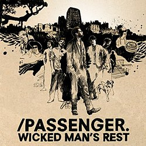

Passenger: Cantor e Compositor
Passenger, nome artístico de Michael David Rosenberg, é um cantor e compositor britânico que se destacou mundialmente por seu estilo acústico e letras profundamente emocionais. Sua música costuma explorar temas como amor, perda, tempo e solidão, sempre com uma abordagem simples, íntima e muito humana. Ao longo de sua carreira, ele construiu uma identidade artística baseada na autenticidade algo raro mesmo entre artistas independentes.

Início da vida
Michael nasceu em 17 de maio de 1984, na cidade de Brighton, no sul da Inglaterra. Desde jovem, demonstrava interesse por música, especialmente pelo violão, instrumento que viria a se tornar central em sua carreira.
Ainda na adolescência, decidiu seguir um caminho fora do convencional. Em vez de buscar apenas gravadoras ou grandes oportunidades, ele começou a tocar nas ruas, desenvolvendo seu estilo artístico diretamente em contato com o público. Essa fase foi essencial para moldar sua identidade musical: direta, emocional e sem excessos.
Formação da Banda
No início dos anos 2000, Passenger não era apenas um artista solo, mas sim uma banda. Michael era o vocalista e principal compositor do grupo. Eles chegaram a lançar um álbum, mas o projeto não teve grande sucesso comercial.

Com o tempo, a banda se desfez. No entanto, Rosenberg decidiu continuar usando o nome “Passenger” em sua carreira solo — algo que se tornaria uma marca registrada.
Let Her Go
Após o fim da banda, Passenger voltou às origens: apresentações de rua. Ele passou anos viajando, especialmente pela Austrália e pelo Reino Unido, tocando em praças e calçadas.
Foi nesse período que ele começou a construir uma base sólida de fãs, mesmo sem apoio massivo da indústria. Foi então que em 2013, Michael lançou seu maior sucesso até os dias de hoje, Let Her Go, no albúm All the Little Lights.
A canção se tornou um fenômeno global, alcançando o topo das paradas em diversos países. Sua letra simples, mas extremamente emocional, combinada com a melodia suave, fez com que a música se tornasse um clássico moderno. Curiosamente, “Let Her Go” foi inicialmente apenas mais uma música do álbum — mas acabou se transformando em um dos maiores sucessos acústicos da década.
Legado e impacto
Passenger se tornou um exemplo de artista que conseguiu alcançar sucesso mundial sem abandonar sua essência. Sua trajetória mostra que simplicidade e autenticidade ainda têm espaço na música contemporânea.
Seu impacto vai além das paradas musicais: suas músicas acompanham pessoas em momentos pessoais, ajudando a processar emoções, refletir sobre a vida e até encontrar conforto.
Discografia
- Wicked Man's Rest (2007)
- Wide Eyes Blind Love (2009)
- Divers & Submarines (2010)
- Flight of the Crow (2010)
- All the Little Lights (2012)
- Whispers (2014)
- Whispers II (2015)
- Young as the Morning, Old as the Sea (2016)
- The Boy Who Cried Wolf (2017)
- Runaway (2018)
- Sometimes It's Something (2019)
- Patchwork (2020)
- Songs for Drunk and Broken Hearted (2021)
- Birds that Flew, Ships that Sailed (2022)
- All the Little Lights (Anniversary) (2023)
- One for the Road (2025)
Descrição
Passenger tem uma média de quase 1 albúm por ano, um feito grandioso para um cantor totalmente independente.
Além disso, seus albúns sempre possuem um tema/sentimento central que guiam todo o clíma das faixas, esses temas geralmente são decididos pelos momentos de sua vida.
Então é isso! Espero que tenha gostado de conhecer um pouco mais sobre a vida e carreira desse cantor tão conhecido mundialmente.